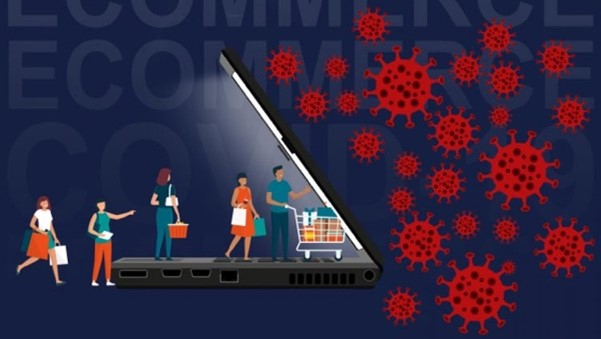

UNDERSTANDING PANIC BUYING AND CORONAVIRUS

Paul Marsden, a consumer psychologist at the University of the Arts London was quoted by CNBC as saying: “Panic buying can be understood as playing to our three fundamental psychology needs.” These needs are autonomy (or the need to feel in control of your actions), relatedness (the need to feel that we are doing something to benefit our families), and competence (the need to feel like smart shoppers making the correct choice).
To say that we are living in unprecedented times feels like an understatement. The situation has rapidly changed. The amount of people deemed safe to gather in a single place has dwindled from thousands, to hundreds, to ten. Restaurants, bars, movie theatres, and gyms in many major cities are shutting down. Meanwhile many office workers are facing new challenges of working remotely full time.
One of the responses we’ve seen to how people are approaching this period of isolation and uncertainty is in huge overnight changes to their shopping behaviour. People have turned to online shopping and that too bulk buying online as its safer than visiting shops. Customers are generally avoiding public places.
Then there is the crowd mentality. Seeing other people buying up the shelves and then seeing a scarcity of necessary products validates the decision to stock up. No one wants to be left behind without any resources.

.png)